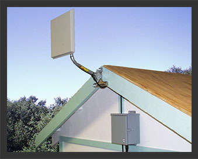

ABOUT
In the winter of 2008, Sam Smith realized he needed better, faster and more reliable internet. Because most providers did not come to his area, he researched and discovered a new way for him to get what he needed... and wanted. After finding a way to establish high-speed internet to his home, he thought he could share it with his neighbors for a minimal cost to them and it would help with the overhead cost. Soon, the word was out. Now, nearly 10 years later he is providing internet to over 1000 homes and businesses in the rural areas of Spotsylvania, Louisa and Caroline Counties.
MEET OUR STAFF
Sam Smith, Owner/Operator
Sam has been a resident of Virginia for the last 30+ years with his wife, Helen and their eight kids. They have lived all that time in the Fredericksburg and Spotsylvania area. Sam is greatly involved in his church and the community. He has spent time helping with projects for Habitat for Humanity and taking time to help friends and family with projects too. Sam and Helen currently reside in their beautiful home in Partlow where they enjoy hobby farming and spending time with all their children and the many grandchildren.
Sam Smith, Owner/Operator
Sam has been a resident of Virginia for the last 30+ years with his wife, Helen and their eight kids. They have lived all that time in the Fredericksburg and Spotsylvania area. Sam is greatly involved in his church and the community. He has spent time helping with projects for Habitat for Humanity and taking time to help friends and family with projects too. Sam and Helen currently reside in their beautiful home in Partlow where they enjoy hobby farming and spending time with all their children and the many grandchildren.
Sam Smith, Owner/Operator
Sam has been a resident of Virginia for the last 30+ years with his wife, Helen and their eight kids. They have lived all that time in the Fredericksburg and Spotsylvania area. Sam is greatly involved in his church and the community. He has spent time helping with projects for Habitat for Humanity and taking time to help friends and family with projects too. Sam and Helen currently reside in their beautiful home in Partlow where they enjoy hobby farming and spending time with all their children and the many grandchildren.